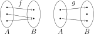
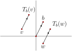
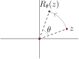
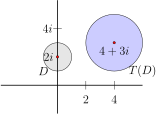
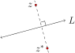
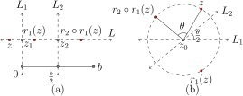

Given two sets \(A\) and \(B\text{,}\) a function \(f:A \to B\) is called one-to-one (or 1-1) if whenever \(a_1 \neq a_2\) in \(A\text{,}\) then \(f(a_1) \neq
f(a_2)\) in \(B\text{.}\) The function \(f\) is called onto if for any \(b\) in \(B\) there exists an element \(a\) in \(A\) such that \(f(a) =
b\text{.}\) A transformation on a set \(A\) is a function \(T: A \to A\) that is one-to-one and onto.
Following are two schematics of functions. In the first case, \(f: A \to
B\) is onto, but not one-to-one. In the second case, \(g: A \to B\) is one-to-one, but not onto.

A transformation \(T\) of \(A\) has an inverse function, \(T^{-1}\text{,}\) characterized by the property that the compositions \(T^{-1}\circ T(a) = a\) and \(T\circ T^{-1}(a) = a\) for all \(a\) in \(A\text{.}\) The inverse function \(T^{-1}\) is itself a transformation of \(A\) and it “undoes” \(T\) in this sense: For elements \(z\) and \(w\) in \(A\text{,}\) \(T^{-1}(w)=z\) if and only if \(T(z) = w\text{.}\)
In this section we develop the following basic transformations of the plane, as well as some of their important features.
Basic Transformations of \(\mathbb{C}\)
General linear transformation: \(T(z)=az+b\text{,}\) where \(a,b\) are in \(\mathbb{C}\) with \(a \neq 0\text{.}\)
Special cases of general linear transformations:
Translation by \(b\text{:}\) \(T_b(z) = z + b\)
Rotation by \(\theta\) about \(0\text{:}\) \(R_\theta(z)=e^{i\theta}z\)
Rotation by \(\theta\) about \(z_0\text{:}\) \(R(z)=e^{i\theta}(z-z_0)+z_0\)
Dilation by factor \(k \gt 0\text{:}\) \(T(z)=kz\)
Reflection across a line \(L\text{:}\) \(r_L(z) = e^{i\theta}\overline{z}+b\text{,}\) where \(b\) is in \(\mathbb{C}\text{,}\) and \(\theta\) is in \(\mathbb{R}\text{.}\)
Example3.1.2Translation
Consider the fixed complex number \(b\text{,}\) and define the function \(T_b: \mathbb{C} \to \mathbb{C}\) by
\begin{equation*}
T_b(z) = z + b.
\end{equation*}
The notation helps us remember that \(z\) is the variable, and \(b\) is a complex constant. We will prove that \(T_b\) is a transformation, but this fact can also be understood by visualizing the function. Each point in the plane gets moved by the vector \(b\text{,}\) as suggested in the following diagram.

For instance, the origin gets moved to the point \(b\text{,}\) (i.e., \(T_b(0) = b\)), and every other point in the plane gets moved the same amount and in the same direction. It follows that two different points, such as \(v\) and \(w\) in the diagram, cannot get moved to the same image point (thus, the function is one-to-one). Also, any point in the plane is the image of some other point (just follow the vector \(-b\) to find this “pre-image” point), so the function is onto as well.
We now offer a formal argument that the translation \(T_b\) is a transformation. Recall, \(b\) is a fixed complex number.
That \(T_b\) is onto:
To show that \(T_b\) is onto, let \(w\) denote an arbitrary element of \(\mathbb{C}\text{.}\) We must find a complex number \(z\) such that \(T_b(z) = w\text{.}\) Let \(z = w - b\text{.}\) Then \(T_b(z) = z + b = (w - b) + b = w\text{.}\) Thus, \(T\) is onto.
That \(T_b\) is one-to-one:
To show that \(T_b\) is 1-1 we must show that if \(z_1 \neq z_2\) then \(T_b(z_1) \neq T_b(z_2)\text{.}\) We do so by proving the contrapositive. Recall, the contrapositive of a statement of the form “If P is true then Q is true” is “If Q is false then P is false.” These statements are logically equivalent, which means we may prove one by proving the other. So, in the present case, the contrapositive of “If \(z_1 \neq z_2\) then \(T_b(z_1) \neq T_b(z_2)\)” is “If \(T_b(z_1) = T_b(z_2)\text{,}\) then \(z_1 = z_2\text{.}\)” We now prove this statement.
Suppose \(z_1\) and \(z_2\) are two complex numbers such that \(T_b(z_1)
= T_b(z_2)\text{.}\) Then \(z_1 + b = z_2 + b\text{.}\) Subtracting \(b\) from both sides we see that \(z_1 = z_2\text{,}\) and this completes the proof.
Example3.1.3Rotation about the origin
Let \(\theta\) be an angle, and define \(\displaystyle R_\theta: \mathbb{C} \to \mathbb{C}\) by \(\displaystyle R_\theta(z) = e^{i\theta}z.\)

This transformation causes points in the plane to rotate about the origin by the angle \(\theta\text{.}\) (If \(\theta > 0\) the rotation is counterclockwise, and if \(\theta \lt 0\) the rotation is clockwise.) To see this is the case, suppose \(z = re^{i\beta}\text{,}\) and notice that
To achieve a rotation by angle \(\theta\) about a general point \(z_0\text{,}\) send points in the plane on a three-leg journey: First, translate the plane so that the center of rotation, \(z_0\text{,}\) goes to the origin. The translation that does the trick is \(T_{-z_0}\text{.}\) Then rotate each point by \(\theta\) about the origin (\(R_{\theta}\)). Then translate every point back (\(T_{z_0})\text{.}\) This sequence of transformations has the desired effect and can be tracked as follows:
\begin{equation*}
z \xmapsto{T_{-z_0}} z - z_0 \xmapsto{R_\theta} e^{i\theta}(z-z_0) \xmapsto{T_{z_0}} e^{i\theta}(z-z_0) + z_0.
\end{equation*}
In other words, the desired rotation \(R\) is the composition \(T_{z_0} \circ R_{\theta} \circ T_{-z_0}\) and
That the composition of these three transformations is itself a transformation follows from the next theorem.
Theorem3.1.5
If \(T\) and \(S\) are two transformations of the set \(A\text{,}\) then the composition \(S \circ T\) is also a transformation of the set \(A\text{.}\)
We must prove that \(S \circ T: A \to A\) is 1-1 and onto.
That \(S\circ T\) is onto:
Suppose \(c\) is in \(A\text{.}\) We must find an element \(a\) in \(A\) such that \(S \circ T(a) = c\text{.}\)
Since \(S\) is onto, there exists some element \(b\) in \(A\) such that \(S(b) = c\text{.}\)
Since \(T\) is onto, there exists some element \(a\) in \(A\) such that \(T(a) = b\text{.}\)
Then \(S \circ T(a) = S(b) = c\text{,}\) and we have demonstrated that \(S
\circ T\) is onto.
That \(S \circ T\) is 1-1:
Again, we prove the contrapositive. In particular, we show that if \(S\circ
T(a_1)=S\circ T(a_2)\) then \(a_1 = a_2\text{.}\)
If \(S(T(a_1))=S(T(a_2))\) then \(T(a_1)=T(a_2)\) since \(S\) is 1-1.
And \(T(a_1)=T(a_2)\) implies that \(a_1\) = \(a_2\) since \(T\) is 1-1.
Therefore, \(S\circ T\) is 1-1.
Example3.1.6Dilation
Suppose \(k > 0\) is a real number. The transformation \(T(z) = kz\) is called a dilation; such a map either stretches or shrinks points in the plane along rays emanating from the origin, depending on the value of \(k\text{.}\)
Indeed, if \(z = x + y i\text{,}\) then \(T(z) = k x + k y i\text{,}\) and \(z\) and \(T(z)\) are on the same line through the origin. If \(k \gt 1\) then \(T\) stretches points away from the origin. If \(0 \lt k \lt 1\text{,}\) then \(T\) shrinks points toward the origin. In either case, such a map is called a dilation.
Given complex constants \(a, b\) with \(a \neq 0\) the map \(T(z) = az + b\) is called a general linear tranformation. We show in the following example that such a map is indeed a transformation of \(\mathbb{C}\text{.}\)
Example3.1.7General Linear Transformations
Consider the general linear transformation \(T(z)=az+b\text{,}\) where \(a, b\) are in \(\mathbb{C}\) and \(a \neq 0\text{.}\) We show \(T\) is a transformation of \(\mathbb{C}\text{.}\)
That \(T\) is onto:
Let \(w\) denote an arbitrary element of \(\mathbb{C}\text{.}\) We must find a complex number \(z\) such that \(T(z) = w\text{.}\) To find this \(z\text{,}\) we solve \(w = az
+ b\) for \(z\text{.}\) So, \(z = \frac{1}{a}(w - b)\) should work (since \(a \neq 0\text{,}\) \(z\) is a complex number). Indeed, \(T(\frac{1}{a}(w - b)) = a \cdot \big[\frac{1}{a}(w - b)\big] + b =
w.\) Thus, \(T\) is onto.
That \(T\) is one-to-one:
To show that \(T\) is 1-1 we show that if \(T(z_1) = T(z_2)\text{,}\) then \(z_1 = z_2\text{.}\)
If \(z_1\) and \(z_2\) are two complex numbers such that \(T(z_1) =
T(z_2)\text{,}\) then \(a z_1 + b = a z_2 + b\text{.}\) By subtracting \(b\) from both sides we see that \(a z_1 = a z_2\text{,}\) and then dividing both sides by \(a\) (which we can do since \(a \neq 0\)), we see that \(z_1 = z_2\text{.}\) Thus, \(T\) is 1-1 as well as onto, and we have proved \(T\) is a transformation.
Note that dilations, rotations, and translations are all special types of general linear transformations.
We will often need to figure out how a transformation moves a collection of points such as a triangle or a disk. As such, it is useful to introduce the following notation, which uses the standard convention in set theory that \(a \in A\) means the element \(a\) is a member of the set \(A\text{.}\)
Definition3.1.8
Suppose \(T: A \to A\) is a transformation and \(D\) is a subset of \(A\text{.}\) The image of \(D\text{,}\) denoted \(T(D)\text{,}\) consists of all points \(T(x)\) such that \(x \in D\text{.}\) In other words,
\begin{equation*}
T(D) = \{a \in A ~|~ a = T(x) ~\text{for some}~ x \in D\}.
\end{equation*}
For instance, if \(L\) is a line and \(T_b\) is translation by \(b\text{,}\) then it is reasonable to expect that \(T(L)\) is also a line. If one translates a line in the plane, it ought to keep its linear shape. In fact, lines are preserved under any general linear transformation, as are circles.
a. We prove that if \(L\) is a line in \(\mathbb{C}\) then so is \(T(L)\text{.}\) A line \(L\) is described by the line equation
\begin{equation*}
\alpha
z + \overline{\alpha}\overline{z} + d = 0
\end{equation*}
for some complex constant \(\alpha\) and real number \(d\text{.}\) Suppose \(T(z) = az + b\) is a general linear transformation (so \(a \neq 0\)). All the points in \(T(L)\) have the form \(w = az + b\) where \(z\) satisfies the preceeding line equation. It follows that \(z = \frac{1}{a}(w - b)\) and when we plug this into the line equation we see that
\begin{equation*}
\alpha\frac{w-b}{a} +
\overline{\alpha}\frac{\overline{w-b}}{\overline{a}} + d =0
\end{equation*}
Now, for any complex number \(\beta\) the sum \(\beta+\overline{\beta}\) is a real number, so in the above expression, \(d-(\frac{\alpha b}{a} + {\frac{\overline{\alpha
b}}{\overline{a}}})\) is a real number. Therefore, all \(w\) in \(T(L)\) satisfy a line equation. That is, \(T(L)\) is a line.
b. The proof of this part is left as an exercise.
Example3.1.10The image of a disk
The image of the disk \(D = \{z \in \mathbb{C}~|~|z-2i| \leq 1\}\) under the transformation \(T: \mathbb{C} \to \mathbb{C}\) given by \(T(z) = 2z + (4-i)\) is the disk \(T(D)\) centered at \(4+3i\) with radius 2 as pictured below.

We will be interested in working with transformations that preserve angles between smooth curves. A planar curve is a function \(\boldsymbol{r}:[a,b] \to \mathbb{C}\) mapping an interval of real numbers into the plane. A curve is smooth if its derivative exists and is nonzero at every point. Suppose \(\boldsymbol{r}_1\) and \(\boldsymbol{r}_2\) are two smooth curves in \(\mathbb{C}\) that intersect at a point. The angle between the curves measured from \(\boldsymbol{r}_1\) to \(\boldsymbol{r}_2\text{,}\) which we denote by \(\angle(\boldsymbol{r}_1,\boldsymbol{r}_2)\text{,}\) is defined to be the angle between the tangent lines at the point of intersection.
Definition3.1.11
A transformation \(T\) of \(\mathbb{C}\) preserves angles at point \(z_0\) if \(\angle(\boldsymbol{r}_1,\boldsymbol{r}_2) =\angle(T(\boldsymbol{r}_1),T(\boldsymbol{r}_2))\) for all smooth curves \(\boldsymbol{r}_1\) and \(\boldsymbol{r}_2\) that intersect at \(z_0\text{.}\) A transformation \(T\) of \(\mathbb{C}\) preserves angles if it preserves angles at all points in \(\mathbb{C}\text{.}\) A transformation \(T\) of \(\mathbb{C}\) preserves angle magnitudes if, at any point in \(\mathbb{C}\text{,}\) \(|\angle(\boldsymbol{r}_1,\boldsymbol{r}_2)| =|\angle(T(\boldsymbol{r}_1),T(\boldsymbol{r}_2))|\) for all smooth curves \(\boldsymbol{r}_1\) and \(\boldsymbol{r}_2\) intersecting at the point.
Suppose \(T(z) = az+b\) where \(a \neq 0\text{.}\) Since the angle between curves is defined to be the angle between their tangent lines, it is sufficient to check that the angle between two lines is preserved. Suppose \(L_1\) and \(L_2\) intersect at \(z_0\text{,}\) and \(z_i\) is on \(L_i\) for \(i = 1,2\text{,}\) as in the following diagram.
A fixed point of a transformation \(T: A \to A\) is an element \(a\) in the set \(A\) such that \(T(a) = a\text{.}\)
If \(b \neq 0\text{,}\) the translation \(T_b\) of \(\mathbb{C}\) has no fixed points. Rotations of \(\mathbb{C}\) and dilations of \(\mathbb{C}\) have a single fixed point, and the general linear transformation \(T(z) = az + b\) has one fixed point as long as \(a \neq 1\text{.}\) To find this fixed point, solve
\begin{equation*}
z = az + b
\end{equation*}
for \(z\text{.}\) For instance, the fixed point of the transformation \(T(z) = 2z + (4-i)\) of Example 3.1.10 is found by solving \(z = 2z + 4 - i\text{,}\) for \(z\text{,}\) which yields \(z =-4 + i\text{.}\) So, while the map \(T(z) = 2z + (4-i)\) moves the disk \(D\) in the example to the disk \(T(D)\text{,}\) the point \(-4+i\) happily stays where it is.
Definition3.1.14
A Euclidean isometry is a transformation \(T\) of \(\mathbb{C}\) with the feature that \(|T(z)-T(w)| = |z-w|\) for any points \(z\) and \(w\) in \(\mathbb{C}\text{.}\) That is, a Euclidean isometry preserves the Euclidean distance between any two points.
Example3.1.15Some Euclidean isometries of \(\mathbb{C}\)
It is perhaps clear that translations, which move each point in the plane by the same amount in the same direction, ought to be isometries. Rotations are also isometries. In fact, the general linear transformation \(T(z)=az+b\) will be a Euclidean isometry so long as \(|a|=1\text{:}\)
So, \(|T(z)-T(w)|=|z-w| \iff |a|=1\text{.}\) Translations and rotations about a point in \(\mathbb{C}\) are general linear transformations of this type, so they are also Euclidean isometries.
Example3.1.16Reflection about a line
Reflection about a line \(L\) is the transformation of \(\mathbb{C}\) defined as follows: Each point on \(L\) gets sent to itself, and if \(z\) is not on \(L\text{,}\) it gets sent to the point \(z^*\) such that line \(L\) is the perpendicular bisector of segment \(zz^*\text{.}\)

Reflection about \(L\) is defined algebraically as follows. If \(L\) happens to be the real axis then
For any other line \(L\) we may arrive at a formula for reflection by rotating and/or translating the line to the real axis, then taking the conjugate, and then reversing the rotation and/or translation.
For instance, to describe reflection about the line \(y = x + 5\text{,}\) we may translate vertically by \(-5i\text{,}\) rotate by \(-\frac{\pi}{4}\text{,}\) reflect about the real axis, rotate by \(\frac{\pi}{4}\text{,}\) and finally translate by \(5i\) to get the composition
for some angle \(\theta\) and some complex constant \(b\text{.}\)
Reflections are more basic transformations than rotations and translations in that the latter are simply careful compositions of reflections.
Theorem3.1.17
A translation of \(\mathbb{C}\) is the composition of reflections about two parallel lines. A rotation of \(\mathbb{C}\) about a point \(z_0\) is the composition of reflections about two lines that intersect at \(z_0\text{.}\)
Given the translation \(T_b(z) = z + b\) let \(L_1\) be the line through the origin that is perpendicular to segment \(0b\) as pictured in Figure 3.1.18(a). Let \(L_2\) be the line parallel to \(L_1\) through the midpoint of segment \(0b\text{.}\) Also let \(r_i\) denote reflection about line \(L_i\) for \(i = 1,2\text{.}\)
Now, given any \(z\) in \(\mathbb{C}\text{,}\) let \(L\) be the line through \(z\) that is parallel to vector \(b\) (and hence perpendicular to \(L_1\) and \(L_2\)). The image of \(z\) under the composition \(r_2 \circ r_1\) will be on this line. To find the exact location, let \(z_1\) be the intersection of \(L_1\) and \(L\text{,}\) and \(z_2\) the intersection of \(L_2\) and \(L\text{,}\) (see the figure). To reflect \(z\) about \(L_1\) we need to translate it along \(L\) twice by the vector \(z_1 - z\text{.}\) Thus \(r_1(z) = z + 2(z_1 - z) = 2z_1-z\text{.}\)
Next, to reflect \(r_1(z)\) about \(L_2\text{,}\) we need to translate it along \(L\) twice by the vector \(z_2 - r_1(z)\text{.}\) Thus,
Notice from Figure 3.1.18(a) that \(z_2 - z_1\) is equal to \(b/2\text{.}\) Thus \(r_2(r_1(z)) = z + b\) is translation by \(b\text{.}\)
Rotation about the point \(z_0\) by angle \(\theta\) can be achieved by two reflections. The first reflection is about the line \(L_1\) through \(z_0\) parallel to the real axis, and the second reflection is about the line \(L_2\) that intersects \(L_1\) at \(z_0\) at an angle of \(\theta/2\text{,}\) as in Figure 3.1.18(b). In the exercises you will prove that this composition of reflections does indeed give the desired rotation.

Figure3.1.18 (a) Translations and (b) rotations are compositions of reflections.
We list some elementary features of reflections in the following theorem. We do not prove them here but encourage you to work through the details. We will focus our efforts in the following section on proving analogous features for inversion transformations, which are reflections about circles.
Theorem3.1.19
Reflection across a line is a Euclidean isometry. Moreover, any reflection sends lines to lines, sends circles to circles, and preserves angle magnitudes.
In fact, one can show that any Euclidean isometry can be expressed as the composition of at most three reflections. See, for instance, Stillwell [10] for a proof of this fact.
Theorem3.1.20
Any Euclidean isometry is the composition of, at most, three reflections.
Is \(T(z) = -z\) a translation, dilation, rotation, or none of the above?
2
Show that the general linear transformation \(T(z) = a z + b\text{,}\) where \(a\) and \(b\) are complex constants, is the composition of a rotation, followed by a dilation, followed by a translation. Hint: View the complex constant \(a\) in polar form.
3
Prove that a general linear transformation maps circles to circles.
4
Suppose \(T\) is a rotation by 30\(^\circ\) about the point 2, and \(S\) is a rotation by \(45^\circ\) about the point 4. What is \(T\circ
S\text{?}\) Can you describe this transformation geometrically?
5
Suppose \(T(z) = iz + 3\) and \(S(z) = -iz + 2\text{.}\) Find \(T\circ S\text{.}\) What type of transformation is this?
6
Find a formula for a transformation of \(\mathbb{C}\) that maps the open disk \(D = \{z ~|~ |z| \lt 2\}\) to the open disk \(D^\prime = \{ z ~|~
|z - i| \lt 5\}\text{.}\) Is this transformation unique, or can you think of two different ones that work?
7
Find a formula for reflection about the vertical line \(x =
k\text{.}\)
8
Find a formula for reflection about the horizontal line \(y = k\text{.}\)
9
Find a formula for reflection in the plane about the line \(y =
mx + b\text{,}\) where \(m \neq 0\text{.}\) Hint: Think about what angle this line makes with the positive \(x\)-axis.
10
Prove that the construction in Figure 3.1.18(b) determines the desired rotation.
11
\(S(z) = kz\) is a dilation about the origin. Find an equation for a dilation of \(\mathbb{C}\) by factor \(k\) about an arbitrary point \(z_0\) in \(\mathbb{C}\text{.}\)